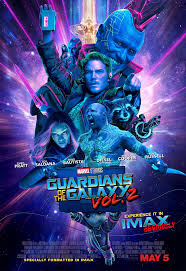

Great interaction with colleagues and environment, always with respect, open mind and good humor, makes easy to me to connect people of specific knowledge to the real demands, streamlining challenging solutions.
Today with only 12+ years in the area of technology, mostly focused on infrastructure solutions, from microinformatics to complex and large systems, now more into the software development, glad I say that I have much ahead, to learn and accomplish!
See for yourself
John WickLegendary assassin John Wick (Keanu Reeves) retired from his violent career after marrying the love of his life. Her sudden death leaves John in deep mourning. When sadistic mobster Iosef Tarasov (Alfie Allen) and his thugs steal John's prized car and kill the puppy that was a last gift from his wife, John unleashes the remorseless killing machine within and seeks vengeance. Meanwhile, Iosef's father (Michael Nyqvist) -- John's former colleague -- puts a huge bounty on John's head. |
|
BrightIn an alternate present day, humans, orcs, elves and fairies have been coexisting since the beginning of time. Two police officers, one a human, the other an orc, embark on a routine night patrol that will alter the future of their world as they know it. Battling both their own personal differences as well as an onslaught of enemies, they must work together to protect a young female elf and a thought-to-be-forgotten relic, which, in the wrong hands, could destroy everything. |
|
|  |
Guardians of the Galaxy 2Peter Quill and his fellow Guardians are hired by a powerful alien race, the Sovereign, to protect their precious batteries from invaders. When it is discovered that Rocket has stolen the items they were sent to guard, the Sovereign dispatch their armada to search for vengeance. As the Guardians try to escape, the mystery of Peter's parentage is revealed. |